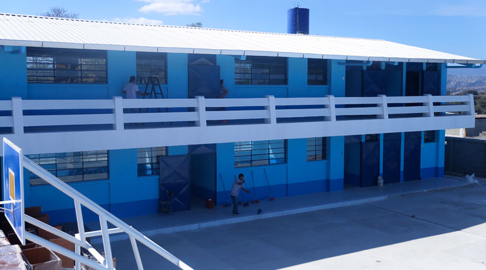
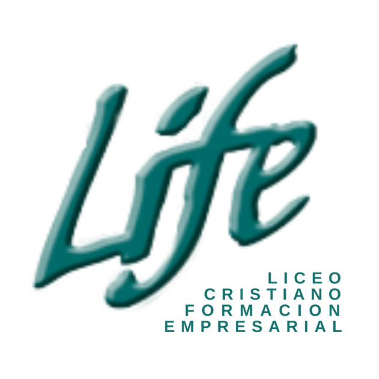

Mi formación académica ha sido dinámica, estudie en varias escuelas y colegios, ya que nos mudamos varias veces.
Comenzando por 1ro primaria:
estudie en la Escuela Primero de Mayo, que es una escuela que esta en la misma colonia donde vivo.
2do primaria a 4to primaria:
estudié en una escuela de villas el milagro, que era donde vivíamos, aun cuando estaba viva mi madre, la verdad no recuerdo el nombre de esa escuela.
5to primaria hasta 3ro básico:
Estudié en el colegio mixto Nuevo San Cristóbal, que es un colegio que está en la colonia donde vivo también, igual que la escuela.
Diversificado:
Estudié en el Liceo Cristiano de Formación Empresarial, que esta ubicado en la calzada San Juan, ahí me gradué de perito contador con orientación en computación.
Universidad:
Actualmente estudio en la Universidad Mariano Gálvez de Guatemala, estoy cursando la carrera de Ingeniería en Sistemas de Información y Ciencias de la Computación.

